×
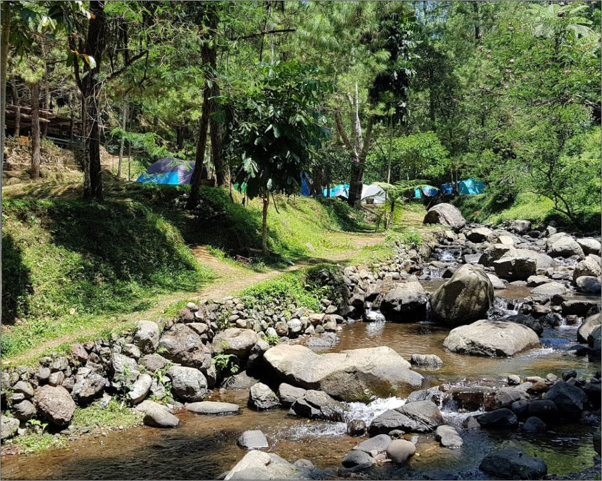
Wisata Alam Capolaga
Alamat: Kampung Panaruban, Cicadas, Sagalaherang, Subang 41282 Tarif: Rp. 10.000/orang Jam Operasional: 08.00 – 16.00 Telepon: (0260) 470941 Wisata Alam Capolaga adalah tempat rekreasi alam, yang memiliki banyak air terjun yang sangat jernih dan juga cocok untuk tempat camping.
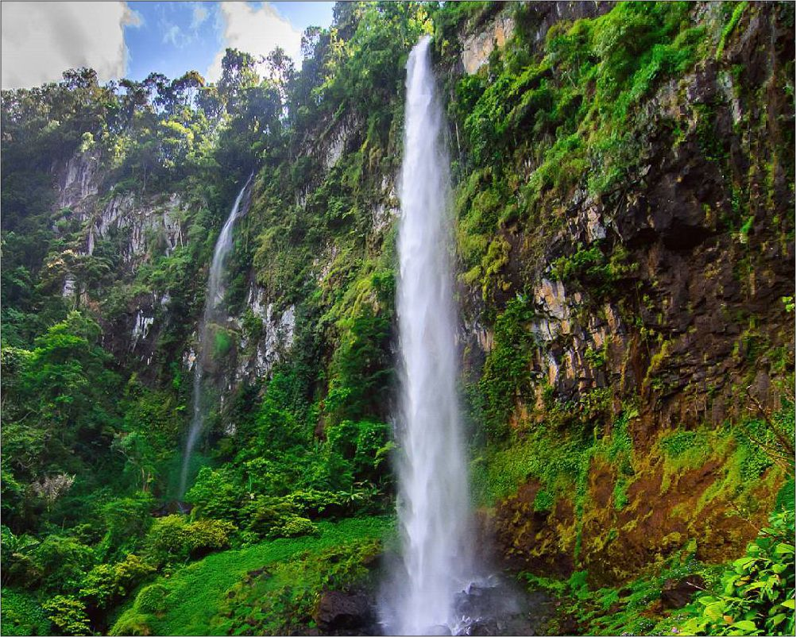
Curug Cileat
Lokasi: Desa Cibogo, Cisalak, Gardusayang, Capunagara, Subang Tiket Masuk: Rp. 6.000/orang Jam Operasional: 06.00 – 23.00 Telepon: 0856-8247-999 Curug Cileat terletak di Gunung Canggah dengan tinggi sekitar 100 meter. Kubangan air di bawahnya sangat luas yaitu sekitar 40 meter sehingga dapat digunakan untuk berenang dan berendam. Curug ini memiliki dua air terjun, salah satunya memiliki aliran yang cukup besar. Fasilitas yang tesedia yaitu gubuk untuk beristirahat dan kamar mandi
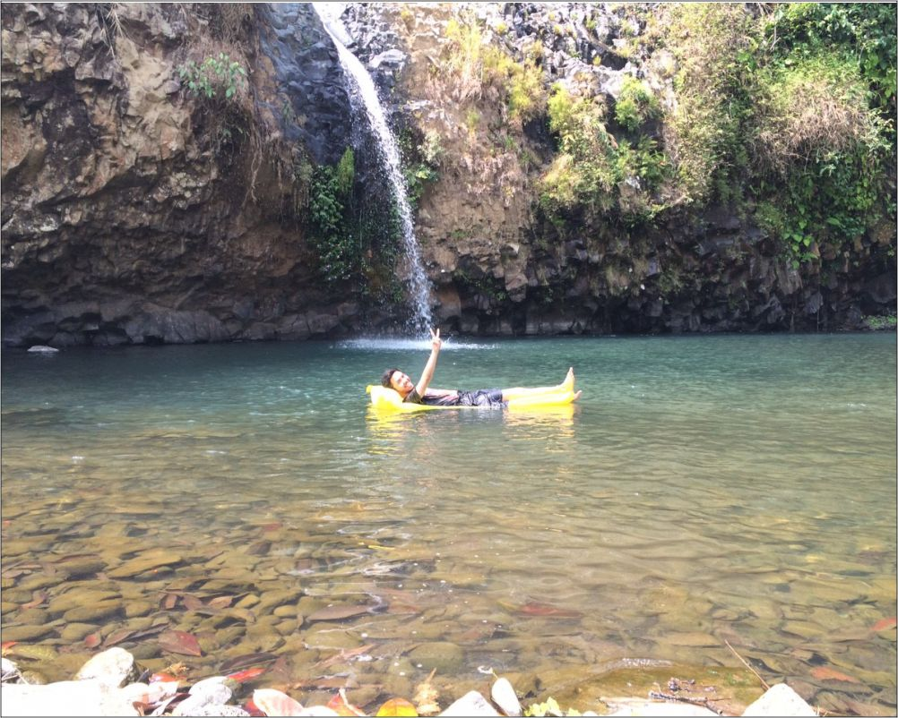
Curug Bentang
Alamat: Cibitung, Ciater, Subang, Jabar 41281 Tarif: Rp. 5.000/orang Curug Bentang terletak sekitar 30 km dari pusat Kabupaten Subang, tepatnya di Desa Cibeusi. Air tumpahan curug membentuk danau yang jernih. Di atas curug ini terdapat air terjun lainnya namun sulit dijangkau karena di atas bukit. Tiket masuknya memang cukup murah namun keindahannya sangat berharga.
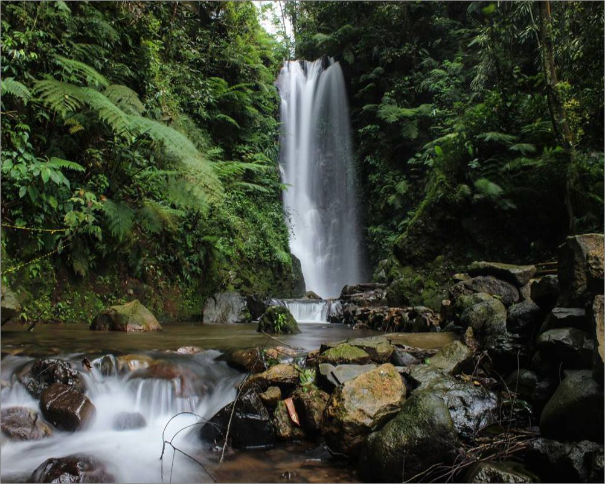
Curug Sadim
Lokasi: Cicadas, Sagalaherang, Subang, 41282 Tiket Masuk: Rp. 7.500/orang Curug Sadim berada di wilayah Perkebunan Teh Nusantara VII. Curug ini di buka sejak tahun 2008 yang merupakan air terjun yang sangat rapih dan memiliki estetika nuansa yang cocok untuk diabadikan
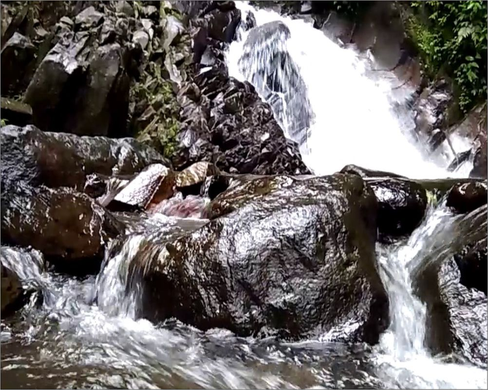
Curug Karembung
Alamat: Kampung Panarubang, Cicadas, Sagalaherang, Subang Tarif: Rp. 6.500/orang Jam Operasional: 08.00 – 16.00 Telepon: (0260) 470941 Curug Karembong merupakan salah satu air terjun yang terletak di kawasan wisata alam Capolaga. Air yang mengalir di sini dapat dimanfaatkan untuk terapi air. Terapi air dapat mengatasi masalah pegal linu atau rematik.
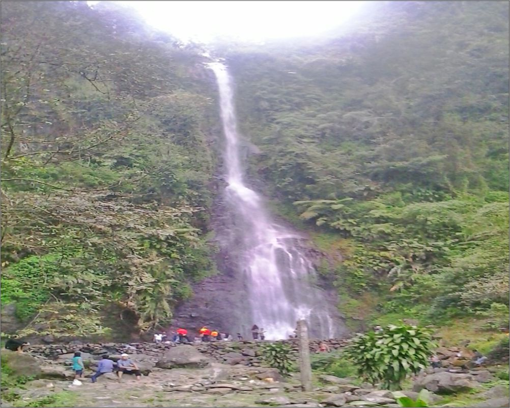
Curug Cilemper
Lokasi: Cipancar, Serangpanjang, Subang Curug Cilemper berada di kawasan hutan. Letaknya yang tersembunyi membuat tak banyak wisatawan yang datang ke sini. Walaupun demikian pemandangan yang disajikan sangat indah dan masih alami. Belum ada akomodasi yang tersedia sehingga perlu berjalan kaki membelah hutan dan menyusuri sungai.
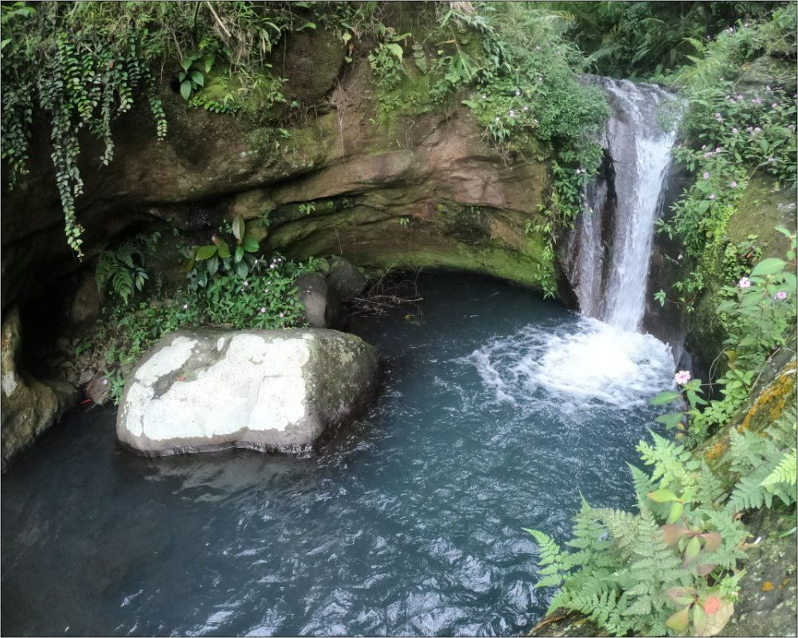
Curug Mandala
Alamat: Cicadas, Sagalaherang, Subang Tarif: Rp. 10.000/orang Curug Mandala memiliki air terjun yang sangat deras, untuk mengunjungi tempat ini harus memiliki persiapan karena jalun untuk menuju air terjun sangat lah licin.
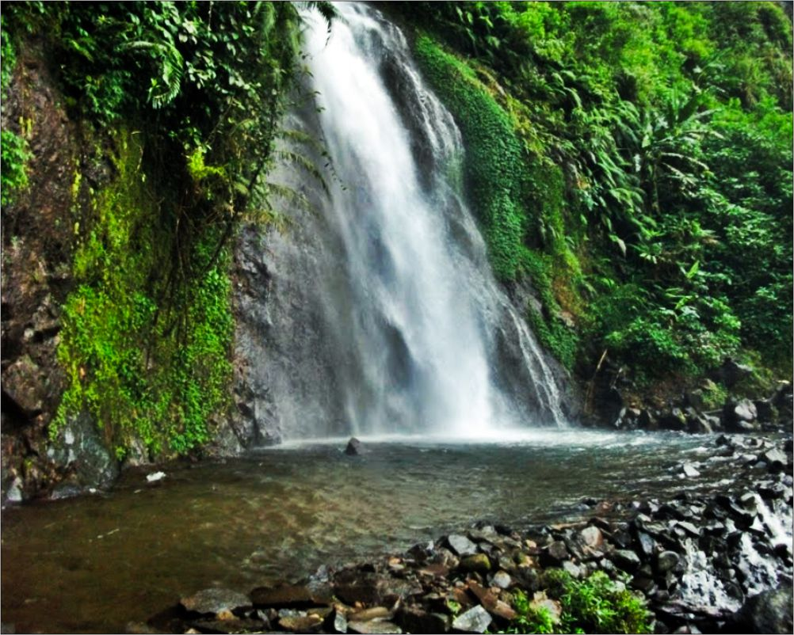
Curug Cijalu
Lokasi: Cipancar, Serangpanjang, Subang Tiket Masuk: Rp. 8.000/orang Lokasi air terjun ini berada dalam kawasan Cagar Alam Gunung Burangrang yang bisa dimanfaatkan oleh para wisatawan. Fasilitas lainnya berupa jalan setapak, mushola, instalasi air, dan lapangan untuk berkemah.
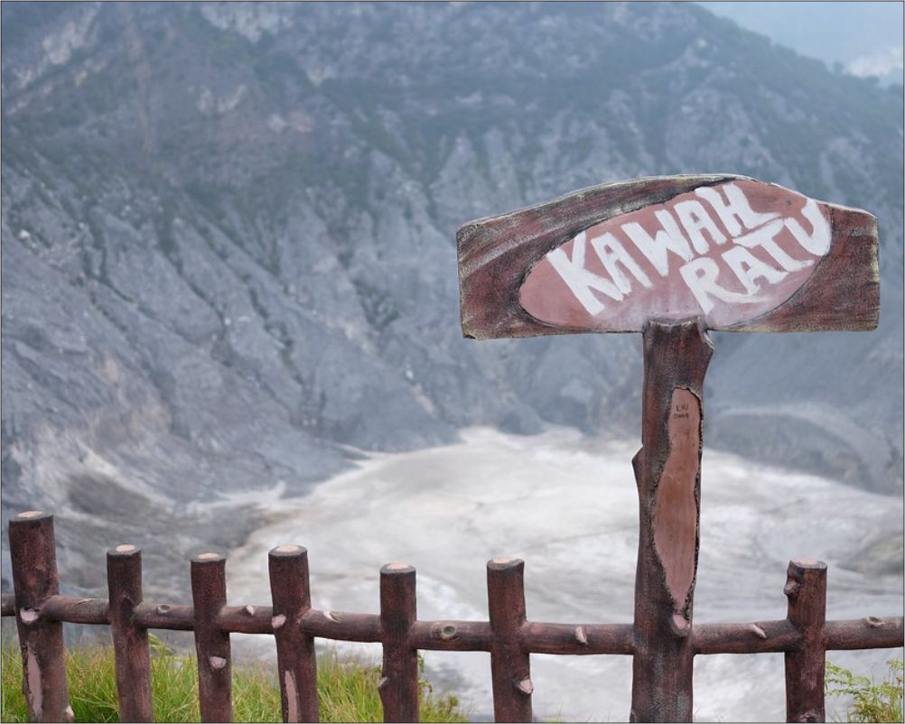
Kawah Ratu
Lokasi: Jl. Gn. Tangkuban Perahu, Cicadas, Sagalaherang, Subang Tiket Masuk: Rp. 13.000/orang Kawah Ratu berada di kawasan Gunung Tangkuban Perahu. Merupakan kawah terbesar diantara kawah yang lainya tempat ini tentu menjadi pilihan utama wisatawan yang pergi ke sana. Pemandangan yang indah di Kawah Ratu lebih pas dikunjungi saat cuaca cerah
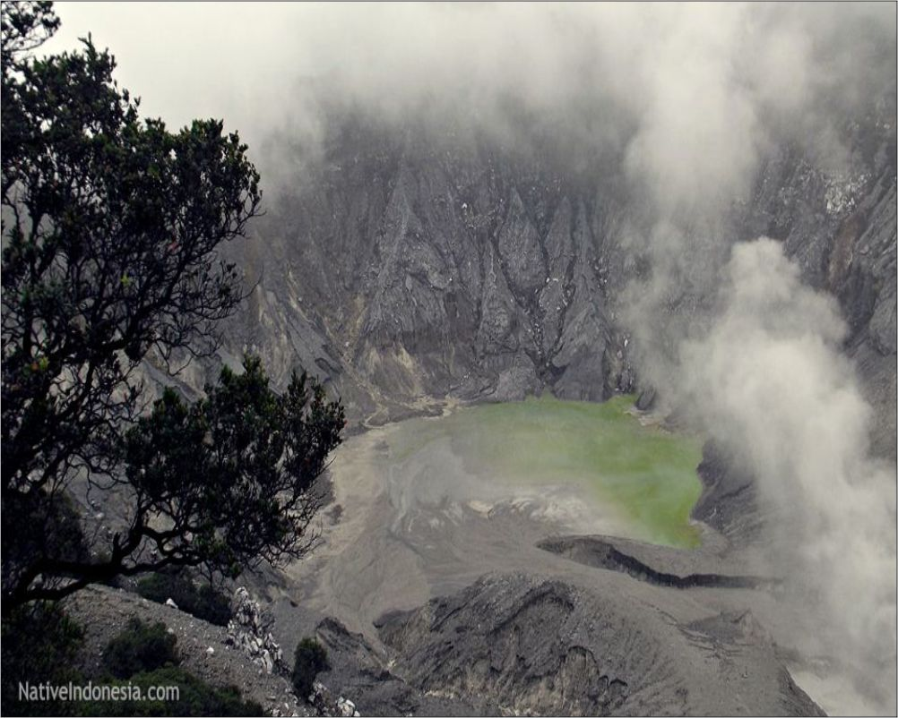
Kawah Upas
Alamat: Cicadas, Sagalaherang, Subang Kawah Upas berada di sebelah kanan, sekitar 25 menit berjalan kaki dari Kawah Ratu. Kawah Upas tampak lebih kecil dengan dasar yang dangkal dan rata.
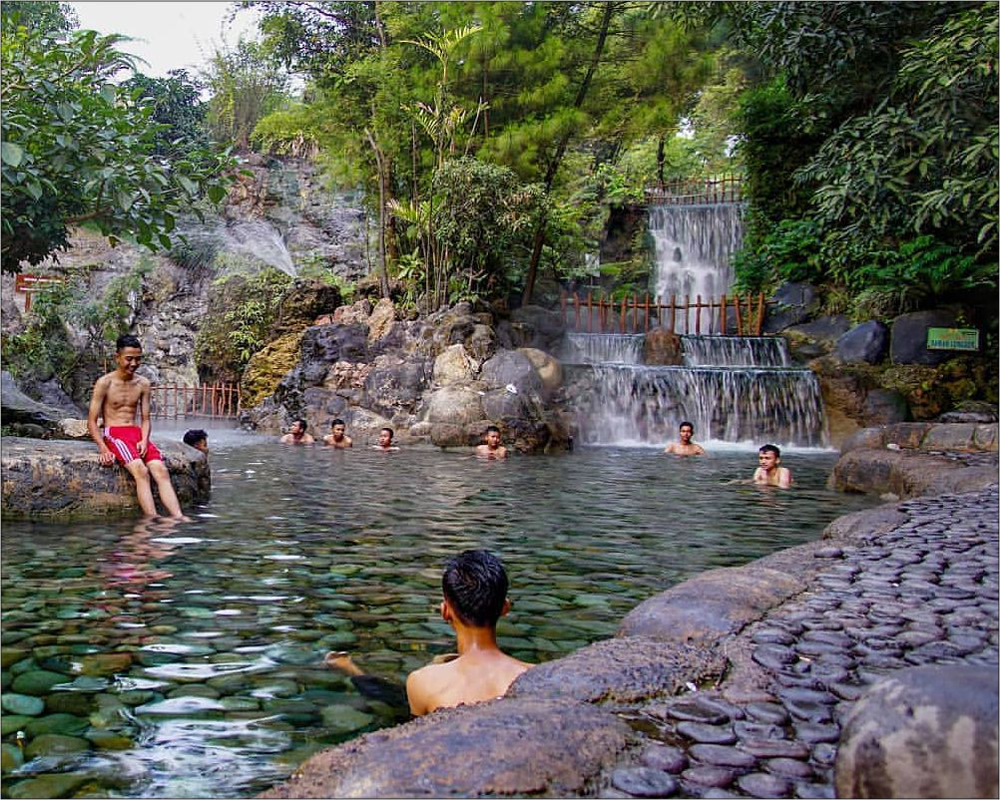
Pemandian Air Panas Ciater
Lokasi: Jl. Raya Ciater, Nagrak, Subang, 40154 Tiket Masuk: Rp. 28.000/orang Jam Operasional: 08.00 – 16.00 Telepon: (0260) 471800 Pemandian Air Panas Ciater merupakan obyek wisata populer di Subang, memiliki banyak air terjun degan alam yang sangat terbuka, bukan hanya pemandian air panas melainkan banyak berbagai macam wahana permainan lainya yang bisa dinikmati.
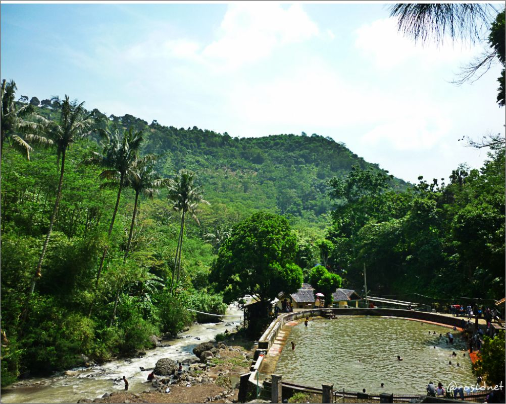
Wisata Alam Batu Kapur
Alamat: Jl. Alternative Sagalaherang-Subang, Curugagung, Subang, 41282 Tarif: Rp. 10.000/orang Jam Operasional: 08.00 – 17.00 Wisata Alam Batu Kapur merupakan pemandian air panas dengan luas keseluruhan 50 hektar. Suhu air panas/hangat mencapai 40 – 45 derajat Celcius dan mengandung belerang. Banyak wahana permainan anak – anak. Para wisatawan banyak yang berendam di sana untuk mengobati berbagai penyakit kulit dan tulang.
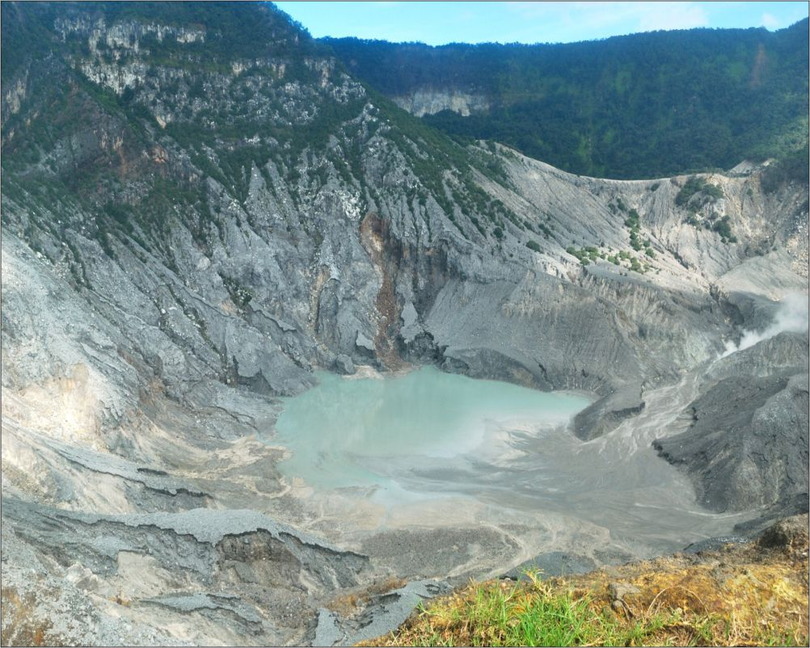
Tangkuban Perahu
Perahu Lokasi: Jl. Gn. Tangkuban Perahu, Ciater, Subang Tiket Masuk: Rp. 20.000/orang (dalam negeri), Rp. 200.000/orang (mancanegara) Tangkuban Perahu merupakan wisata gunung aktif. Udara di sini mencapai 2° C di malam hari, dan 17° C di siang hari. Pemandangannya yang indah menjadikan tempat ini sering digunakan sebagai lokasi foto prewedding atau pembuatan film. Ada tiga kawah yang muncul dari letusan yang pernah terjadi di Gunung Tangkuban Perahu. Kawah tersebut antara lain Kawah Upas, Kawah Domas, dan Kawah Ratu.
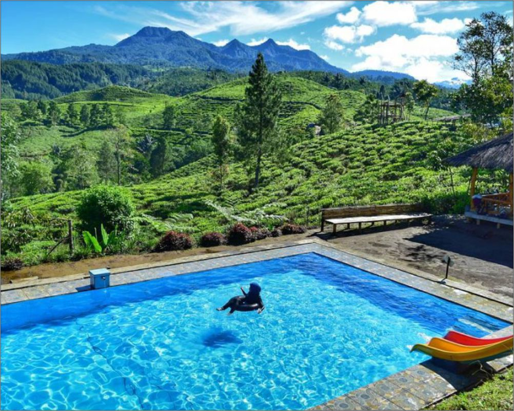
Taman Wisata Tirta Alam
Lokasi: Jl. Sagala Herang, RT 11/14, Sagalaherang Kaler, Subang Tiket Masuk: Rp. 16.000 – Rp. 19.000/orang Telepon: 0812-2338-0652 Taman Wisata Tirta Alam menyediakan berbagai wahana permainan anak dan juga kolam renang. Jika ingin menikmati wahana tersebut perlu membayar lagi, rata-rata Rp. 5.000. Di sana terdapat 3 kolam renang yang airnya berasal dari mata air alami, memiliki tempat istirahat yang terdapat banyak tempat kuliner.
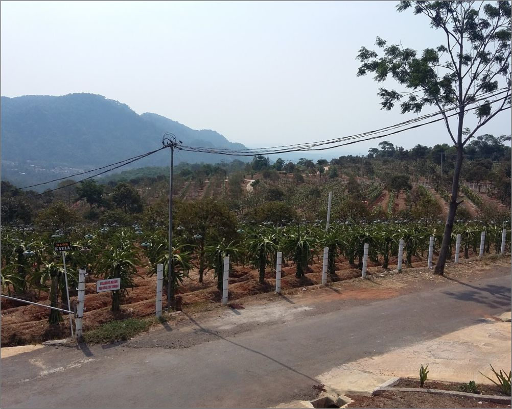
Kebun Buah Naga
Alamat: Cirangkong, Cijambe, Subang Kebun Buah Naga di Subang terletak di Cirangkong. Pengunjung yang datang ke sana bisa belajar budi daya buah naga sekaligus membeli buah naga.
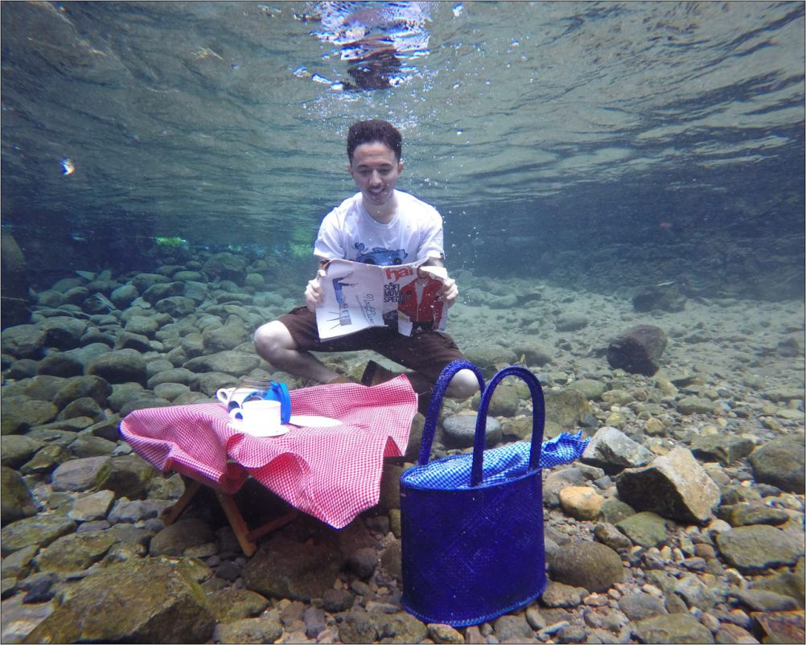
Kasumber Mata Air Sipondok (Aqua Subang)
Lokasi: Pasanggrahan, Kasomalang, Subang Jam Operasional: 06.00 – 21.00 Mata Air Kasumber banyak yang mengatakan bahwa tempat wisata ini mirip dengan Umbul Ponggok di Klaten. Dasar mata air Kasumber memang sama dengan Umbul Ponggok yaitu berupa pasir dan bebatuan. Pemandangan dasar mata air yang jelas dan jernih tak jauh berbeda dari dasar laut.
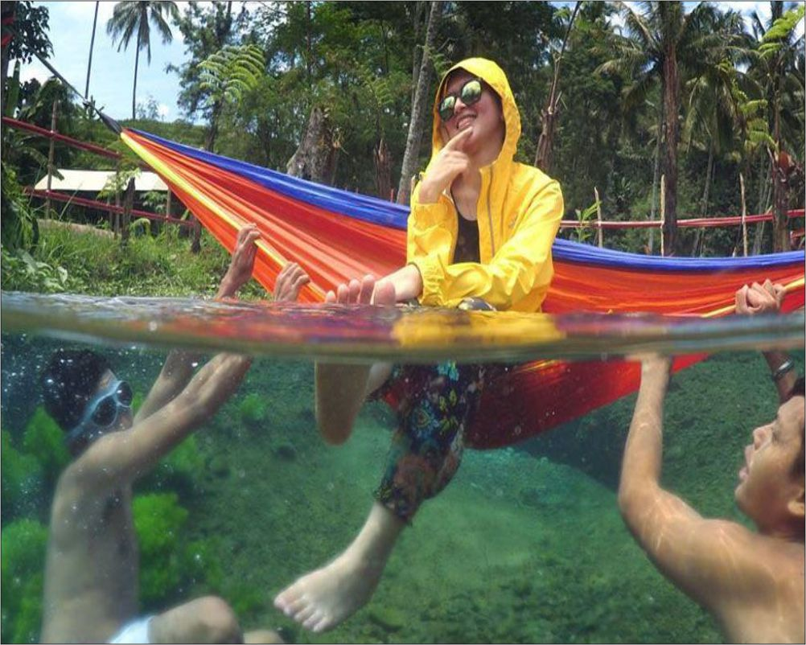
Mata Air Cimincul
Lokasi: Sukamelang, Kasomalang, Subang Mata Air Cimincul tidak jauh berbeda dengan Mata Air Kasumber. Di sini wisatawan bisa melihat mata air yang bening sampai ke dasarnya. Walaupun belum dikelola dengan baik, tak ada salahnya untuk mencoba berkunjung ke tempat ini.
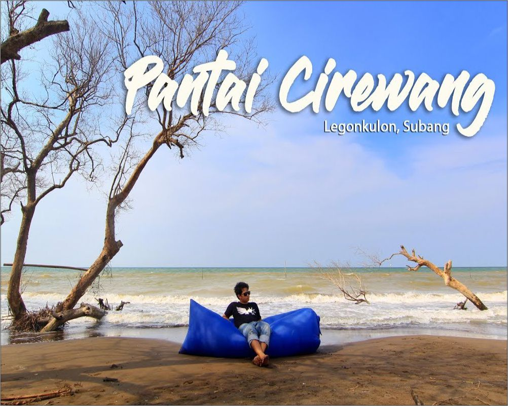
Pantai Cirewang
Alamat: Pangarengan, Legonkulon, Pamanukan, Subang wisatawan yang ingin menuju ke Pantai Cirewangpara perlu menaiki perahu untuk melewati hutan mangrove. Setelah menikmati pemandangan hutan mangrove barulah sampai ke pantai Cirewangpara. Pantai ini merupakan tanah timbul sekitar 500 meter persegi, mulai terbentuk tahun 2000-an.
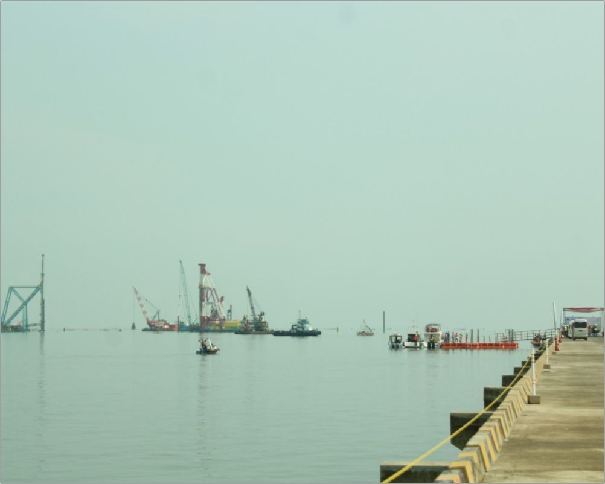
Pantai Patimban
Lokasi: Dusun Patimban, Pusakanagara, Subang, 41255 Pantai Pantimban memiliki arus air yang cukup landai sehingga bisa digunakan untuk bermain dengan aman. Wisatawan bisa melakukan berbagai aktivitas seperti bermain volly, sky boat, naik perahu, memancing, dan lain-lain. Pantai Patimban memiliki banyak pohon kelapa. Fasilitas yang tersedia berupa tempat peristirahatan dan warung-warung makan di tepi pantai.
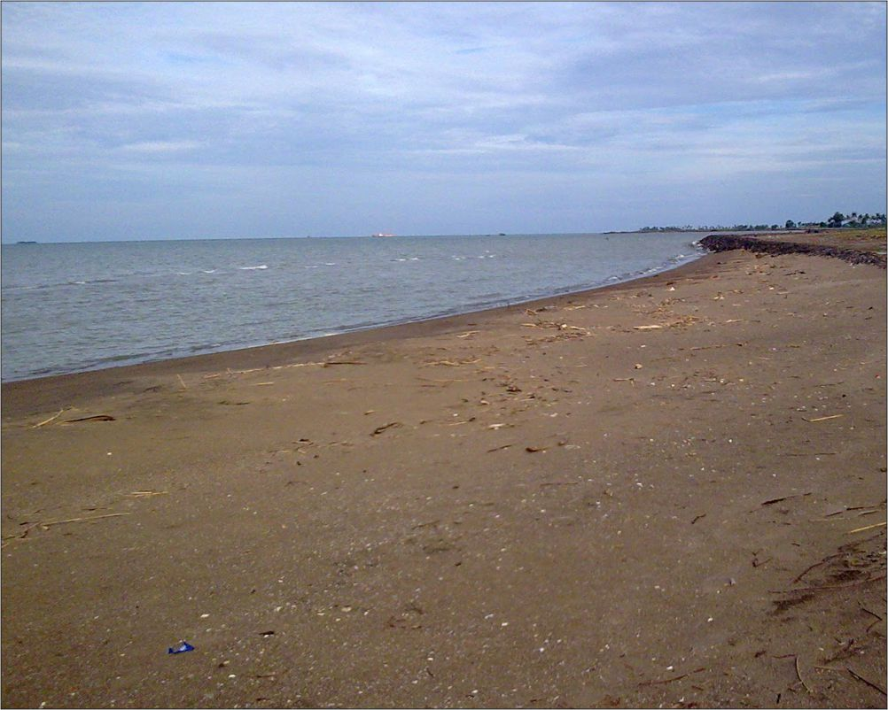
Pantai Tanjungpura
Lokasi: Tanjung Pura, Patimban, Pusakanagara, Subang Wisata Bahari Tanjungpura terletak di perbatasan antara Subang dan Indramayu. Lokasinya yang terletak di pinggir jalan raya membuatnya mudah diakses. Di sana selain menikmati pemandangan laut seperti melihat sunset, pengunjung bisa membeli ikan segar yang dijual.
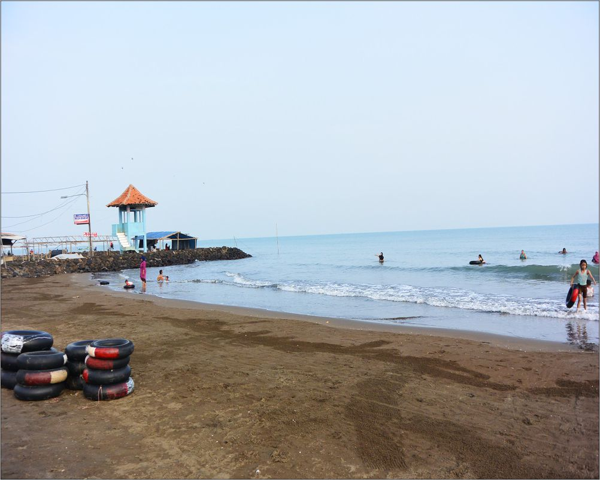
Pondok Bali
Lokasi : Desa Mayangan Kecamatan Legonkulon Kab Subang – jabar Pantai pondok bali terletak di Desa Mayangan Kecamatan Legonkulon Kab Subang - jabar Pantai ini merupakan pantai eksotis yang memiliki hamparan pasir yang membentang dan memiliki beberapa aktifitas seperti memancing, bermain pasir, melihat keindahan sunset.
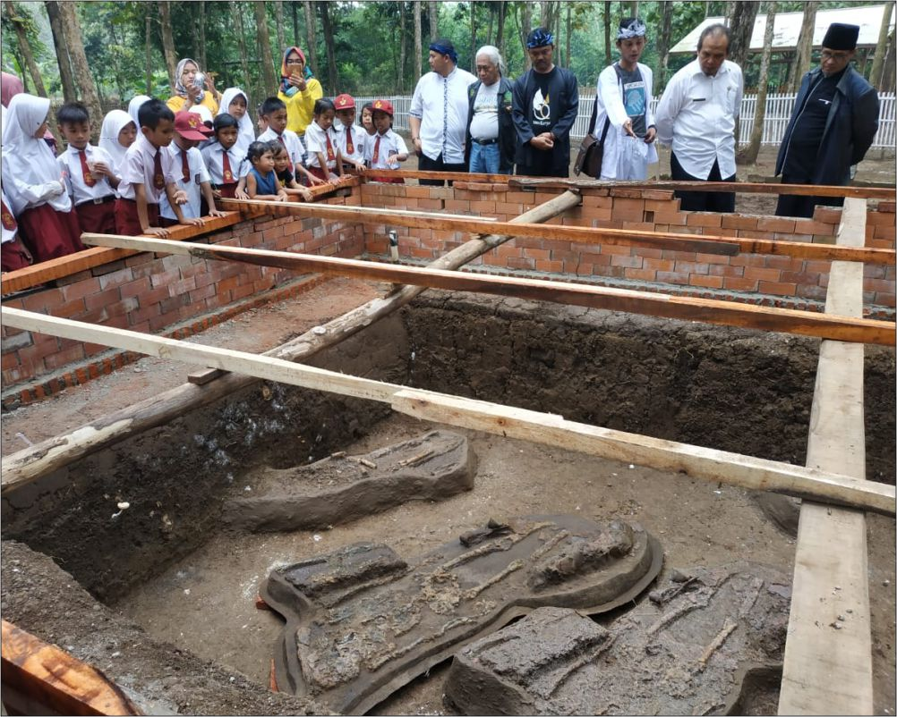
Situs Nyai Subang Larang
Lokasi: Jl. Raya Gambarsari, Cikaum Timur, Subang Telepon: 0812-8112-8068 Situs Nyai Subang Larang merupakan tempat peninggalan arkeologi Sunda dari zaman Kerajaan Pajajaran. Banyak peninggalan yang ditemukan seperti bebatuan, perhiasan, serta benda-benda peninggalan Nyai Subang Larang. Situs bersejarah ini diresmikan pada tahun 2011 oleh Dinas Pariwisata dan Kebudayaan Subang.
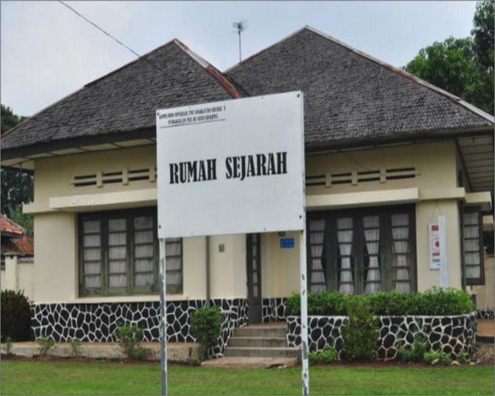
Rumah Sejarah Kalijati
Lokasi : Komplek Garuda E 25 Lanud Suryadarm, Desa Kalijati Barat, Kecamatan Kalijati, Subang. Rumah Sejarah Kalijati berdiri pada tahun 1917, yang merupakan tempat paling bersejarah yang didalamnya berupa lukisan perundingan tentara belanda dan memiliki cerita tentang penyerahan kekuasaan belanda terhadap jepang
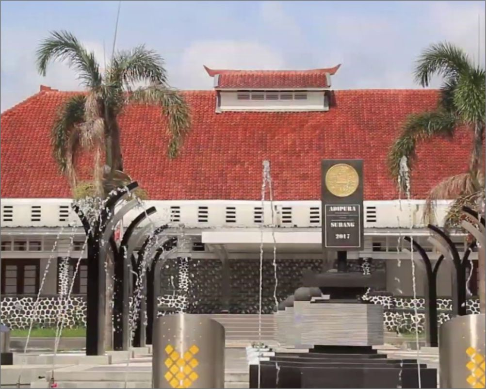
Wisma Karya
Lokasi : Jl.ade Irma Suryani National No 02 Karanganyar, Cigedung, Kecamatan Subang, Kabupaten Subang, Jawa Barat 41211 Jam/oprasi : 08:00 – 16:00 Telepon : (0260) 411014 Wisma karya merupakan tempat bersejarah, karena wisata ini berdiri sejak zaman penjajahan belanda. Wisma karya subang ini memiliki memiliki berbagai peninggalan yang bisa diabadikan dan dilestarikan.
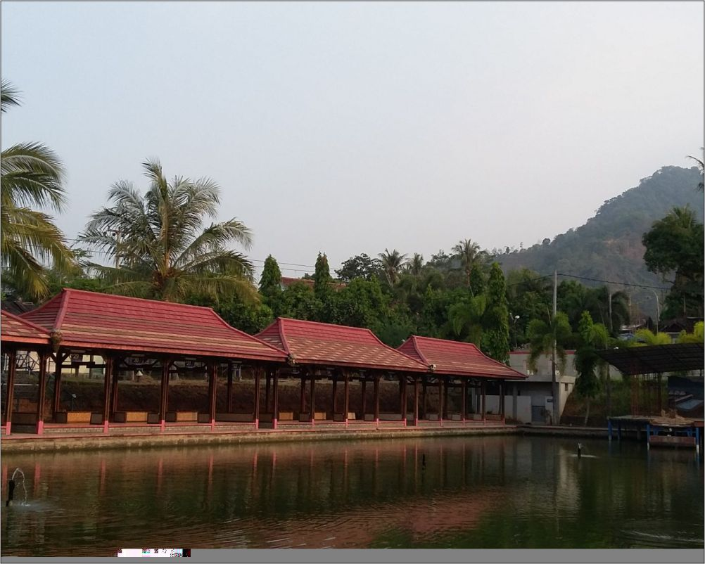
Wisata Pancing Ikan Monster Lembah Gunung Kujang
Lokasi: Jl. Raya Gunung Tua KM 08, No.11, Cijambe, Subang Tiket Masuk: Rp. 150.000/orang Jam Operasional: 08.00 – 18.00 Wisata Pancing Ikan Monster menyajikan ikan yang panjangnya lebih dari satu meter dan berat puluhan kilogram. Ikan yang ditempatkan di kolam pemancingan ada sekitar 18 jenis yaitu Arapaima, Gabus Toma, Leopard, Lele, Lele Abino, Bawal, Redtail Catsh, Patin, Patin Albino, Aligator Spatula, Tagih, Jengiskan, Tiger Fish, Belida, Belida Albino, Gurame, Gurame Albino, dan Gabus Lokal. Pemancing juga bisa tidak membawa pulang semua ikannya dan hanya membayar sebagian saja.

Kiara Ciater
Lokasi: Jl. Raya Ciater, Kel. Palasari, Nagrak, Subang Tiket Masuk: Rp. 40.000/orang Kolam rendam Kiara Ciater memiliki fasilita lengkap seperti kamar bilas, kolam air hangat, restoran, toko souvenir, dan lain-lain. Kebersihan kolam dan sekitarnya dapat terlihat sehingga membuat pengunjung menjadi sangat nyaman saat berendam di sana.
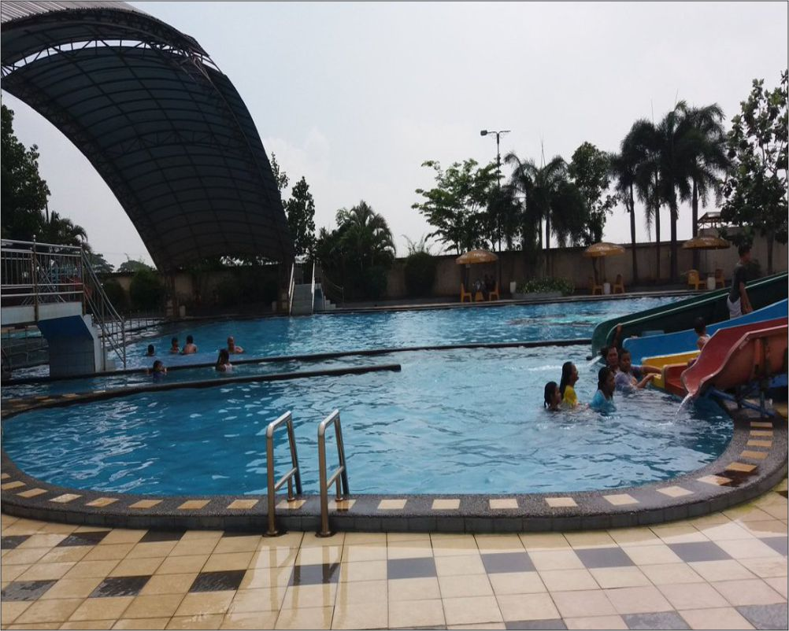
Kolam Renang Bintang Fantasi
Alamat: Jl. Pasar Impres, Rancasari, Pamanukan, Rancasari, Subang Tarif: Rp. 20.000/orang Kolam Renang Bintang Fantasi juga memiliki fasilitas yang cukup lengkap. Terdapat kolam yang kedalamannya beragam untuk dewasa dan anak-anak. Selain itu terdapat taman bermain anak, perahu angsa, flying fox, dan lapangan futsal. Pada saat liburan tempat ini lumayan ramai dikunjungi baik dari Subang maupun luar kota.
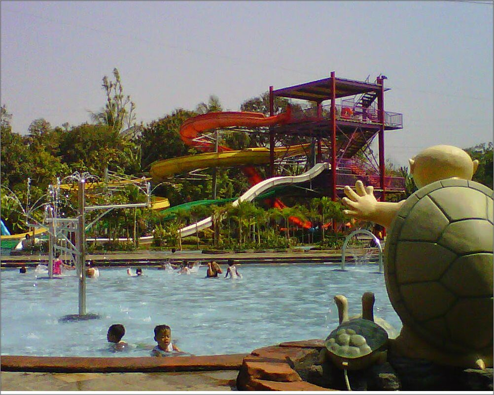
Planet Water Boom
Alamat: Jl. Brigjen Katamso No. 18A, Dangdeur,Subang Tarif: Rp. 25.000 – 35.000/orang Jam Operasional: 09.00 – 18.00 Telepon: (0260) 7423288 Planet Water Boom merupakan tempat wisata air di Subang. Di sini juga terdapat air terjun buatan dan area untuk outbond/flying fox, dan juga memiliki berbagai wahana anak – anak dan dewasa.

Alun-Alun Subang
Alamat: Jl. Otto Iskandardinata, Karanganyar, Kec. Subang, Kabupaten Subang Buka 24 jam Alun – alun subang bukan hanya untuk berolahraga melainkan tempat untuk bersantai, berfoto, dan juga alun – alun subang di buka bebas untuk masyarakat umu.